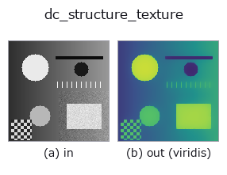

decomposition op• データ種: image → image
• 呼び出し: fullseye.apply(img, "dc_structure_texture", a=0.5, b=0.5) (2-D は 1 画像 + 2 スカラつまみ a,b∈[0,1] のモデル)

*図は合成の入力 128×128 で実際に走らせた出力。左が入力、右が出力。点群は上から見た散布(明るさ = z)、1-D 列は折れ線、体積は z 方向の最大値投影、動画は中央フレーム、複素画像は振幅、絵にならない返り値は値そのもの。*
*出力は viridis 風の疑似カラー(暗い紫 = 小、黄 = 大)。距離・位相・向き・深度のような「量の場」を読むため。*
つまみ a を振る(0.1 / 0.5 / 0.9、もう一方は既定):
▸ dc_structure_texture: knob a sweep (docs site)
*つまみ b は出力を変えない(実測: 0.1 / 0.5 / 0.9 で同一)。*
別の画像でも(合成シーン / 写真 / 硬貨。上段が入力、下段がその出力。つまみは既定):
▸ dc_structure_texture: other inputs (docs site)
*4 列目はカラー (H,W,3) の入力。この op は色を跨がずに扱える(色チャネルを 3 本目の空間軸として畳み込まない)。*
画像の構造／カートゥーン成分（TV-L2、シャンボル（Chambolle）法）。
画像を「構造(cartoon)+テクスチャ」に分け、構造側を返す。ROF/TV-L2 モデル
`min_u ||u - f||^2 / (2*weight) + TV(u)` を Chambolle(2004)の双対射影法で
固定 120 反復(`tau=0.125)解く。weight = 0.02 + 0.28*a で、a` が
大きいほど滑らか(平坦な区画が広がり、細かい模様が消える)、`a=0` でも
ごく弱い平滑が入る。`b` は未使用。
入力は 2 次元 float64・[0,1] に揃える(3 次元はチャネル平均、NaN→0、
±Inf→1/0)。返り値は入力と同形の float64、[0,1] に clip。飽和しない限り
`dc_structure_texture + (dc_texture_residual - 0.5) == 入力` が成り立つ。
1xN / Nx1 など 2 次元の発散が定義できない極小画像は入力をそのまま返す
(構造=入力、テクスチャ=0.5)。例外時は fail-soft で入力のクリップ版が返り、
backend_safe の台帳に記録される(strict モードでは再送出)。
ガウスぼかしと違ってエッジ(段差)は保ち、模様・ノイズだけを落とす。反復数が
固定なので大きな画像では収束しきらないことがある(残りはテクスチャ側に出る)。
テクスチャ側だけが欲しければ `dc_texture_residual`。周期模様の除去や
欠陥検出の前処理として使い、後段に `threshold や dyn_threshold`。
背景が低ランク(縞・グラデーション)なら `dc_rpca_lowrank` も候補。
• gallery2d_texture_freq ファミリ ガイド
• blas_threads_and_memory — 行列分解が遅い理由の知識 — BLAS スレッド・キャッシュ・メモリ配置
• サンプルデータ カタログ(DL URL / ライセンス) — 2-D は skimage.data(BSD/public)+ 合成、3-D は実データ源(Stanford/PDS 等)の DL URL。
• 演算子の来歴・参考文献 — この op 族の元になった研究/手法の出典。
• アルゴリズムの正典(著者・年)と用途は上記ファミリ使い方ガイドに記載。
下のプログラムは実際に走ることを確かめてある(図と同じ入力)。Studio のヘルプではこのブロックがボタンになり、その場で読み込んで実行できる。
dc_structure_texture 0.50 0.50
▸ Load this pipeline · Load & run
• gallery2d_texture_freq — py -3.11 examples/gallery2d_texture_freq.py
• poc_fiber_orientation — py -3.11 examples/poc_fiber_orientation.py
image を入力に取れる)identity · gaussian · mean_box · bilateral · unsharp · median · min_filter · max_filter
decomposition)dc_texture_residual · dc_rpca_lowrank · dc_rpca_sparse · dc_retinex · dc_local_contrast_norm · dc_homomorphic
*Provenance: ops.py — 2D operator registry. この per-op ノートは tools/opdocs.py md が自動生成(手編集しない)。*
© 2026 Kazufumi Furuse — Fullseye operator documentation. Licensed under Apache-2.0.
{kind=link}
{kind=link}